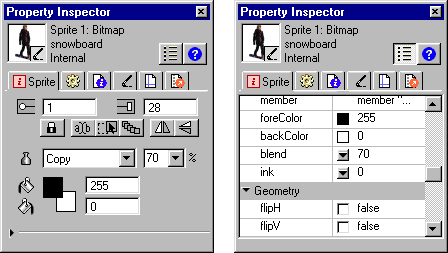

Using Director > Sprites > Changing the appearance of sprites > Setting blends
Using Director > Sprites > Changing the appearance of sprites > Setting blends |
Setting blends
You can use blending to make sprites transparent. To change a sprite's blend setting, use the Sprite tab in the Property Inspector.

Director can gradually change blend settings to make sprites fade in or out. See Tweening other sprite properties.
The Blend percentage value affects only Copy, Background Transparent, Matte, Mask, and Blend inks.
To set blending for a sprite:
1 |
Select the sprite. |
2 |
Choose a percentage from the Blend pop-up menu in the Property Inspector.
 |
To set blending with Lingo:
Set the blend sprite property. See blend.